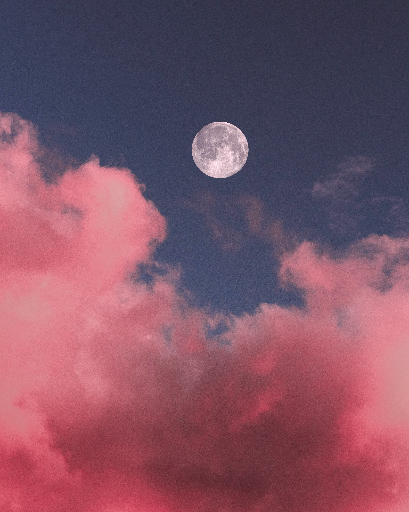

A relação da Terra com a lua tem bilhões de anos e, graças ao satélite, o planeta tem um clima que permite a existência de vida e dos humanos
O mesmo não pode ser dito do satélite natural: as condições climáticas da lua são grandes impeditivos para uma eventual colonização, ao contrário do que algumas produções de ficção científica fazem parecer.
